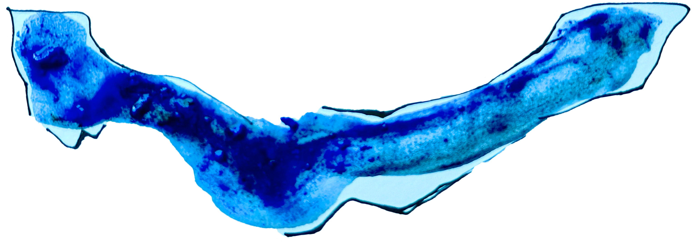
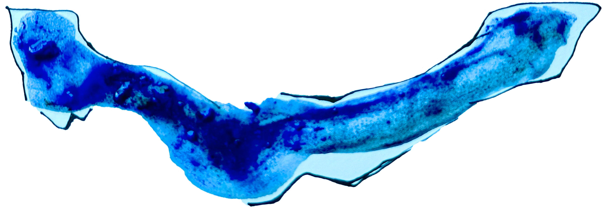

The idea of imperfection is not new. It has always existed in history and aesthetics. In ancient Greece, symmetry and proportion were seen as signs of perfection, and art tried to follow those strict standards of the {ideal body}. But over time, artists started to realize that flaws and accidents were often closer to real life. In Japanese wabi-sabi aesthetics, impermanence, cracks, and fragility are not seen as defects but as sources of beauty. In modern and contemporary art, many artists deliberately include “mistakes” in their work—using {broken} or {unstable materials}, or keeping blur, underexposure, and failure inside photographs.
Today, with technology moving so fast, imperfection is closely tied to digital anxiety. The stronger AI becomes, the more it creates an image of perfection. Machines seem faster, more accurate, more organized compare to human beings, which creates a new kind of {fear} that should we try to become machine-like, or can we find meaning in our own imperfection? Donna Haraway, in A Cyborg Manifesto, argued that the line between humans and machines is blurry. But instead of being a threat, this blur can also be a possibility.
Artists give us many ways to think about this. Glitch art takes “system errors” and “broken code” and turns them into visual language. Eva Hesse made sculptures from materials that {rot} or {break}, bringing instability into the work itself. Imperfection here is not a failure but a way of creating. My project follows the same path. A broken link is not just a bug, instead, it is part of the narrative. The user’s story path is random and irreversible, just like life. The booklet, bookmarks, notebook, and video are all fragments, but together they form the whole. The main idea is simple: instead of avoiding imperfection, we use it to build new forms of narrative and new ways of seeing beauty.


 
